Flight Controls & State Estimation
Building a quadrotor flight stack from scratch, actuators to stable hover.
Starting from nothing but raw PWM motor commands and IMU streams, I built every layer of a real flight-control pipeline: actuator characterization, thrust modeling, gyroscope bias calibration, complementary-filter attitude estimation, cascaded attitude control, control allocation through a mixer matrix, altitude and optical flow state estimation, and finally a full closed-loop hover controller. Every number cited here came from real experimental data collected and analyzed in MATLAB.
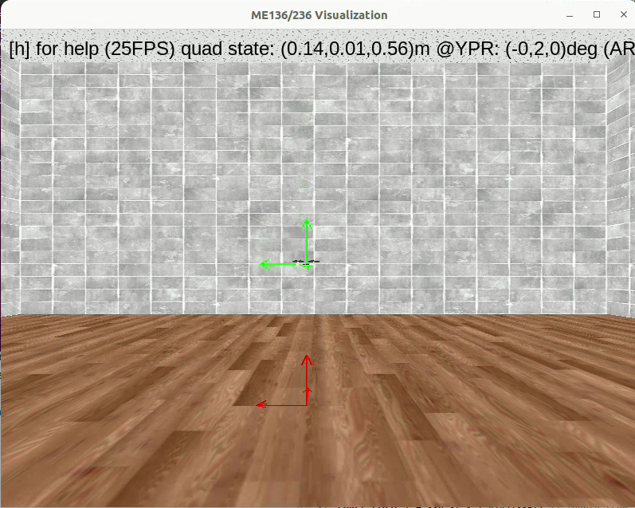
End Result
A tuned hover controller that kept the vehicle airborne for 30 seconds.
"Out of the box", the vehicle lasted around 5 seconds before losing control and hitting a wall. After five phases of building, tuning, and validating the estimation and control stack, the same vehicle averaged 30 seconds of stable hover flight, a 6× improvement, purely from understanding and iterating on the underlying physics.
The tools used throughout were embedded C++ running on the vehicle's flight computer, MATLAB for telemetry analysis and plotting, and a physics-accurate simulation environment for hardware-in-the-loop testing.
Phase 1
Sensor characterization: understanding what the IMU actually measures
Before any estimation or control logic could be written, I needed to understand the sensor environment the vehicle would be operating in. The inertial measurement unit provides rate gyroscope and accelerometer data, but that raw data is not the same thing as angular velocity or linear acceleration. It contains bias, noise, and motor induced vibration that have to be understood before they can be used.
Quantifying motor vibration noise
I logged gyroscope output in two states: motors completely off, and all four motors running at a steady command. The numbers told a clear story.
The X and Y axes saw roughly 23× higher noise when motors were running; the Z axis was less affected (0.0054 rad/s), likely because motor vibration couples more strongly into the lateral axes than into the yaw axis. Critically, despite that noise, all three gyroscope means remained close to zero while the vehicle was stationary, confirming that vibration adds zero-mean high-frequency noise but does not introduce a persistent bias offset in a static condition. This confirmed that gyroscope bias calibration could be done from a single stationary snapshot.
Axis conventions and deliberate motion
I also manually rotated the vehicle through known motions to verify axis sign conventions and to develop intuition for sensor scaling. Rotating sharply about the Y axis produced a gyroscope peak of −6.982 deg/s in that channel and corresponding accelerometer motion, while the accelerometer Z axis measured up to 9.8196 m/s² under gravity, matching the expected 1g. These checks are mundane but essential: axis sign errors and scale factor assumptions are responsible for some of the most confusing control bugs because they manifest as the vehicle doing the exact opposite of what the controller commands.
Noise simulation
The simulation environment had a noise injection mode that could be toggled on and off. With noise disabled, gyroscope and accelerometer signals zeroed out entirely, confirming that the simulator was producing synthetic Gaussian noise rather than real sensor physics. With noise re-enabled, the full stochastic character returned. This gave me confidence that tuning parameters found in simulation would transfer meaningfully to a real sensor environment.
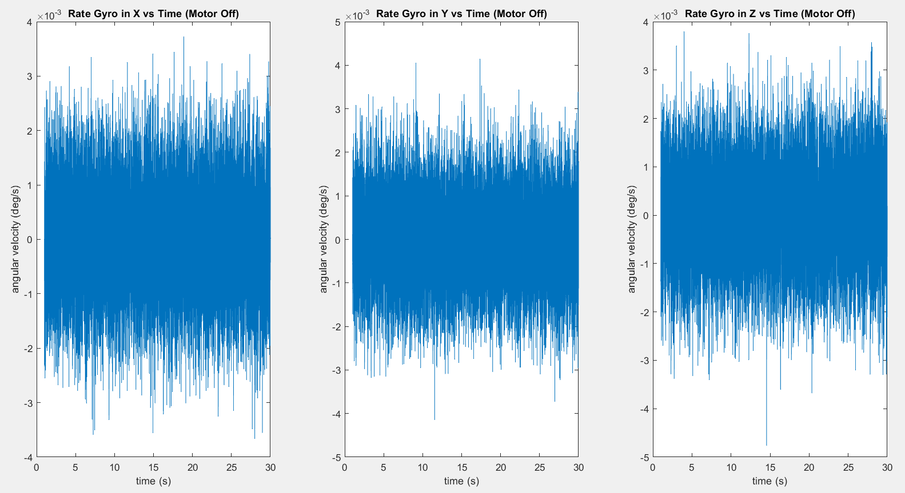
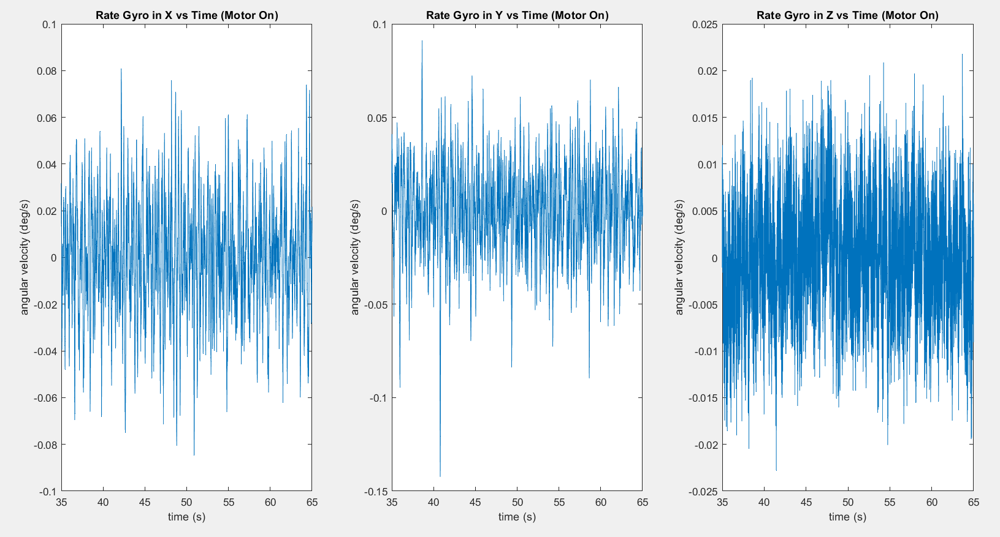
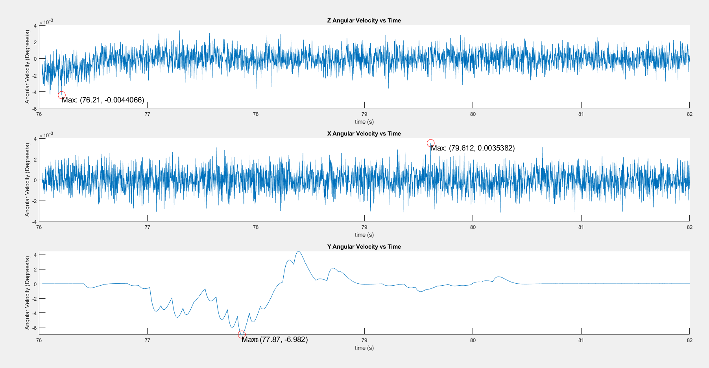
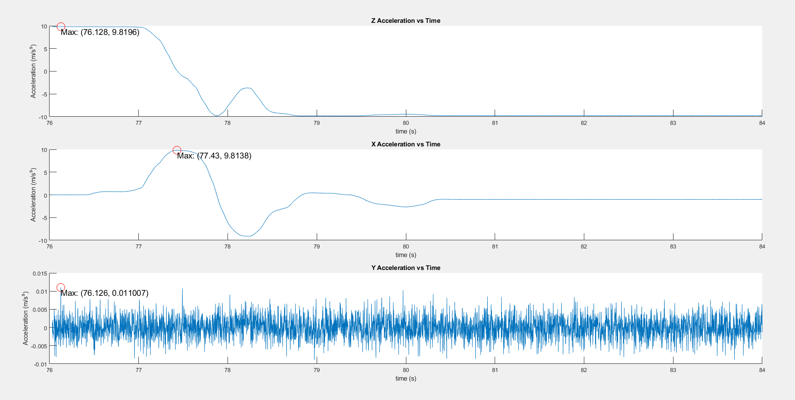
Phase 2
Actuator modeling: mapping motor commands to physical force
A flight controller has to express its outputs in physically meaningful terms, not raw PWM values. That required two identification steps: a PWM-to-speed map and a speed-to-thrust map. Together they let the software think in Newtons while hardware deals in motor commands.
Step 1 PWM to angular speed: linear identification
I swept the motor through a range of PWM commands and logged the resulting rotor angular speed. The relationship was clearly linear, so I fit it with a least-squares regression:
a = −69.33 b = 0.145
This gave a clean analytical function pwmCommandFromSpeed(Ω) that the
flight loop could call to translate any desired rotor speed into the correct motor
command. The small residual error from the linear fit matched what you'd expect from
friction and deadband in the motor driver, acceptable for a flight controller.
Step 2 Angular speed to thrust: quadratic characterization
To measure thrust, I constrained the vehicle on a pendulum rig so it could only rotate in one axis. Starting from the known gravitational acceleration (9.81 m/s² in the Y direction with the vehicle hanging sideways), I extracted the tilt angle β from the accelerometer:
Averaging the accelerometer once it stabilized (to de-noise) gave the static force balance at each commanded speed. Plotting the resulting thrust against Ω confirmed the expected propeller aerodynamics:
Thrust grows as the square of rotor speed. This quadratic relationship is critical throughout the control stack: it means that you can't simply double motor speed to double thrust. It also means the effective actuator gain changes with operating speed, which matters when tuning the mixer and the attitude controller.
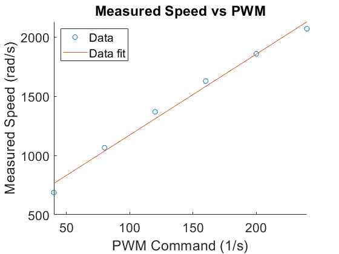
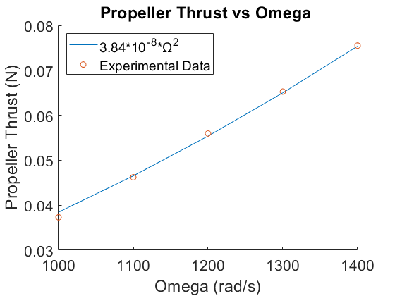
Phase 3
Attitude estimation: fusing gyroscope and accelerometer data
Once the actuators were characterized, the next requirement was knowing where the vehicle was pointed. A flight controller that doesn't know its own attitude is flying blind. The challenge is that neither the gyroscope nor the accelerometer alone provides an adequate attitude estimate.
Why gyroscope integration alone fails
A gyroscope measures angular rate, so attitude can be computed by integration over time. I built this estimator first and tested it by leaving the vehicle stationary for 30 seconds across five runs. The result: the pitch estimate drifted roughly 1° per 5 minutes even without any deliberate motion. This is gyroscope bias accumulating. Because integration is a running sum, even a tiny constant offset in the sensor signal grows without bound over time. The purely-integrating estimator is useful for capturing fast angular motion but is completely unsuitable as a stand-alone attitude reference.
The discrete-time nature of the implementation compounded this: state estimates are updated at fixed loop intervals, which means any motion that occurs faster than the loop rate is averaged and underestimated. Higher update frequencies reduce this accumulation, but don't eliminate the underlying bias problem.
Complementary filter: mixing fast and slow
The solution was a complementary filter that combines the gyroscope's high-frequency accuracy with the accelerometer's long-term stability. The accelerometer can derive roll and pitch from the gravity vector, but those measurements are noisy and corrupted by any linear acceleration. The key insight is that these two error sources are in different frequency bands: gyro drift is low-frequency (slow accumulation), and accelerometer noise is high-frequency (moment-to-moment jitter). A complementary filter exploits this:
The mixing parameter ρ controls the tradeoff. A smaller ρ trusts the gyroscope more: fast transients are captured well but drift correction is slow. A larger ρ trusts the accelerometer more: drift is aggressively corrected but measurement noise injects jerky, step-like changes into the estimate.
Tuning ρ by binary search
I found the optimal ρ empirically using a binary search strategy: start with known extremes, test the midpoint, and narrow in on the boundary where behavior changes.
At ρ = 0.01, the estimator responded correctly to a 30° pitch rotation, smoothly tracking the motion and returning near zero after the vehicle was restored to level. There was no runaway drift and no noisy step behavior. The same binary-search discipline was reused in later phases for hover-loop gain selection.
Extending to 3D: roll, pitch, and yaw
With 1D pitch estimation validated, I extended the estimator to all three attitude angles. Roll and pitch are both observable from the accelerometer gravity vector. Yaw is not, gravity has no horizontal component that reveals heading, so the yaw estimate relies entirely on gyroscope integration and is the most susceptible to drift. The full 3D estimator updated roll, pitch, and yaw simultaneously in each loop iteration, applying accelerometer corrections to roll and pitch while integrating yaw from rate only.
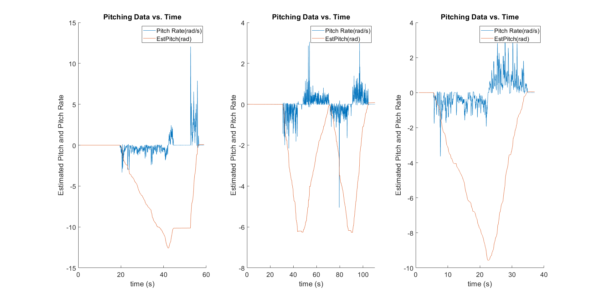
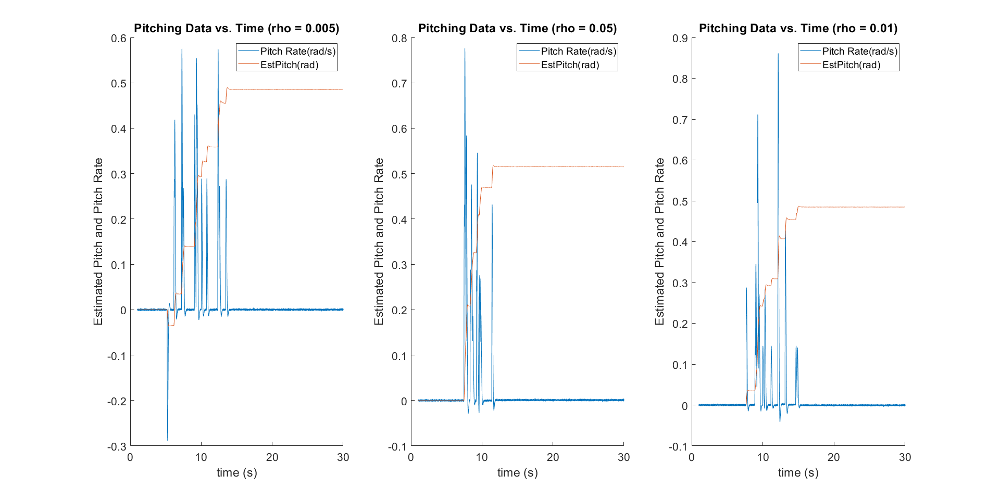
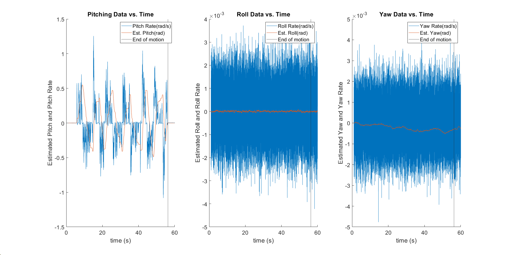
Phase 4
Attitude control and control allocation: closing the loop
With a working attitude estimator, the next step was using that state to actually control where the vehicle pointed. This phase introduced the full attitude controller architecture, a cascaded rate-and-angle loop, and the mixer matrix that translated desired body forces and moments into individual propeller commands.
Cascaded controller architecture
The attitude controller was structured as two nested loops. The outer loop compares estimated angle to desired angle and generates a desired angular rate. The inner loop then compares the estimated angular rate to that desired rate and generates a commanded angular acceleration. This angular acceleration, multiplied by the vehicle's moment of inertia about the relevant axis, gives the required control moment.
The advantage of cascade structure over a single-loop design is that the inner rate loop can be tuned faster than the outer angle loop without sacrificing stability. Rate loop bandwidth is limited by actuator dynamics and sensor noise; angle loop bandwidth is limited by the rate loop. By separating them, each loop can be tuned independently and the designer has clear physical intuition for what each time constant controls.
The mixer matrix: from moments to propellers
The controller produces four desired outputs: total thrust cΣ, and three body-frame moments n1 (roll), n2 (pitch), n3 (yaw). These must be distributed across four propellers. The mixer matrix encodes the physical geometry of the vehicle, arm length L and yaw coupling coefficient k:
⎢ c_P2 ⎥ = 0.25 ⎢ 1 −1/L −1/L +1/k ⎥ × ⎢ n₁ ⎥
⎢ c_P3 ⎥ ⎢ 1 −1/L +1/L +1/k ⎥ ⎢ n₂ ⎥
⎣ c_P4 ⎦ ⎣ 1 +1/L +1/L −1/k ⎦ ⎣ n₃ ⎦
c_Pi in Newtons, n_i in N·m, L = arm length (m), k = torque/thrust coupling (m)
Each row maps total thrust plus moment contributions from each axis to one propeller's individual thrust. The 0.25 factor appears because in symmetric hover all four propellers share thrust equally. The ±1/L terms encode how each propeller's position relative to the roll and pitch axes creates torque. The ±1/k term encodes yaw: opposite-spinning propellers create equal and opposite reaction torques, and k captures the ratio between thrust and that reaction torque.
This matrix is the connection between the abstract control outputs (moments) and the concrete hardware reality (per-motor force commands). Getting it wrong, wrong sign, wrong arm length, wrong coupling coefficient, causes the vehicle to roll when it should pitch, yaw when it should hold steady, or any other confusing cross-coupling behavior.
Step response and rise time
With the controller implemented, I tested it with a step input from 0° to 30° pitch. The system rose from 0% to 90% of the final value in 1.03 seconds. Using a reduced vertical acceleration of 8 m/s² degraded the response, rise time fell to 0.892 s but the tracking became noticeably choppier, confirming that available control authority directly affects the quality of the trajectory, not just the speed.
Stability boundaries: time constant effects
Two intentional instability tests gave important insight into the system's stability margins.
Purposely unstable rate controller: By setting the rate-loop gain to a destabilizing value, I observed the angular velocity begin to grow exponentially. The measured doubling time was 22 milliseconds, far faster than a human reflex loop could recover, and faster than predicted by theory alone. The discrepancy suggested that in simulation, the controller was overcorrecting each update step before the system dynamics could respond, making the instability faster than pure exponential growth would imply.
Accidentally unstable controller: By reducing the rate time constant to 0.025 s, the control became unstable without producing a clean doubling behavior. Instead, the estimated pitch oscillated in a repeating pattern, never converging. The mechanism was over-correction: the very short time constant caused the controller to demand large corrections faster than the actuator could deliver and faster than the estimator could track, creating a feedback loop where every action made the error worse. This experiment made the practical lesson about sampling rate and bandwidth matching extremely concrete.
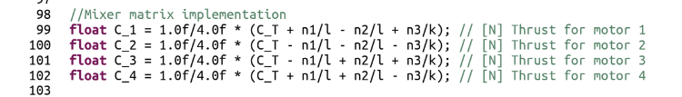
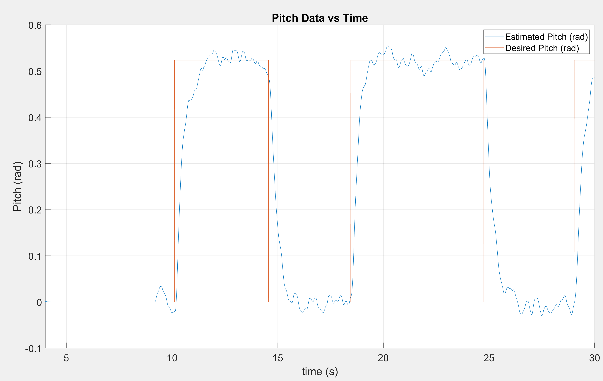
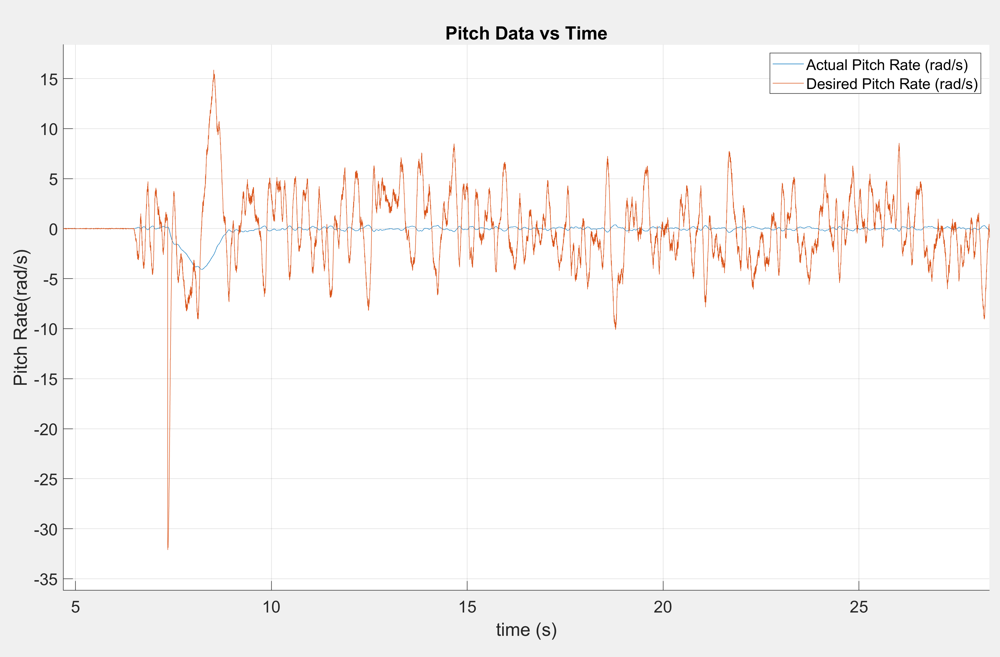
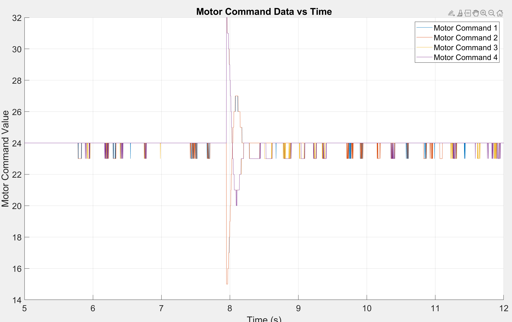
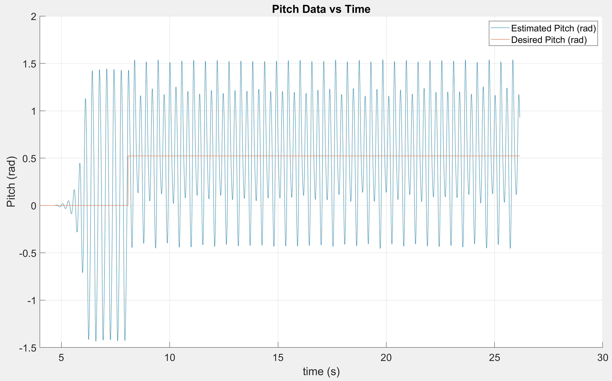
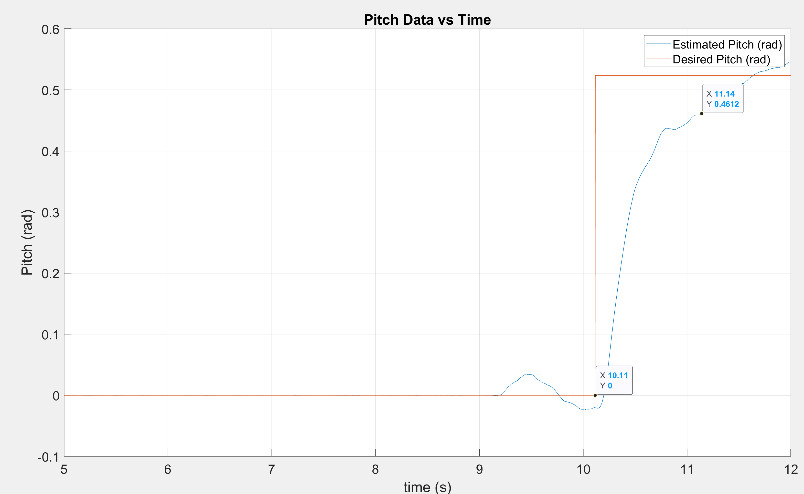
Phase 5
Height and horizontal state estimation: sensors beyond the IMU
Hover requires knowing not just where the vehicle is pointing, but how high it is and how fast it is moving horizontally. Neither of those come from the IMU alone. This phase added a range sensor for height and an optical-flow sensor for horizontal velocity, and developed estimators for both.
Height estimation: attitude-corrected range sensing
The range sensor measures the distance from the vehicle to the ground. When the vehicle is level, this equals height directly. When the vehicle is tilted, the sensor sees a slant distance, which is longer than the true vertical height. The correction is geometric:
d = raw range sensor reading, φ = roll, θ = pitch
Skipping this correction produces a height estimate that artificially decreases when the vehicle tilts, telling the controller the vehicle is lower than it is, which causes the controller to add thrust, which causes more tilt, which reports even lower height. The attitude correction breaks that coupling.
Vertical velocity was estimated by blending the height derivative with a predictor-corrector style update using a mixing factor, similar to the complementary filter used for attitude. This smoothed the noisy numerical derivative while still reacting to real changes in altitude.
Horizontal velocity estimation: optical flow with gyro compensation
Optical flow measures apparent image motion, how pixels shift from frame to frame. But image motion has two sources: translation of the vehicle and rotation of the vehicle. If the vehicle pitches forward, the camera sees apparent forward motion even if the vehicle is perfectly still. The rotation contribution must be subtracted out before the remaining signal can be interpreted as horizontal velocity:
v_y = (flow_y − ω_x · dt) · h
ω = gyroscope rate, h = estimated height, flow = raw sensor pixel rate
The height scaling converts angular pixel rates into linear velocity: a given pixel shift corresponds to a larger physical motion when the vehicle is high than when it is low. Without gyro compensation, the horizontal velocity estimate would spike every time the vehicle tilted to accelerate, exactly backwards from what a stabilizing controller needs.
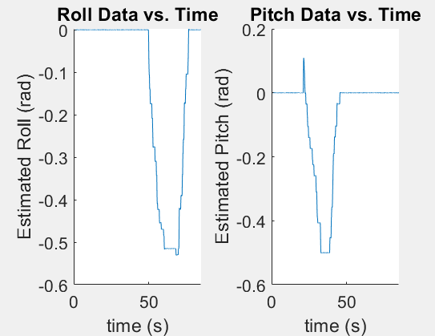
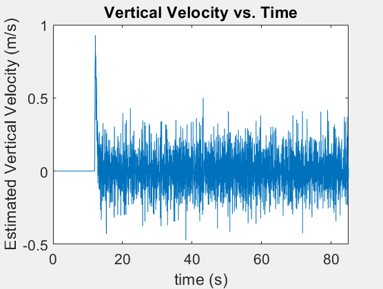
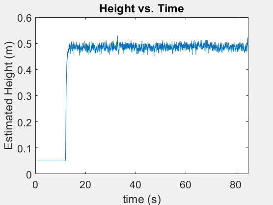
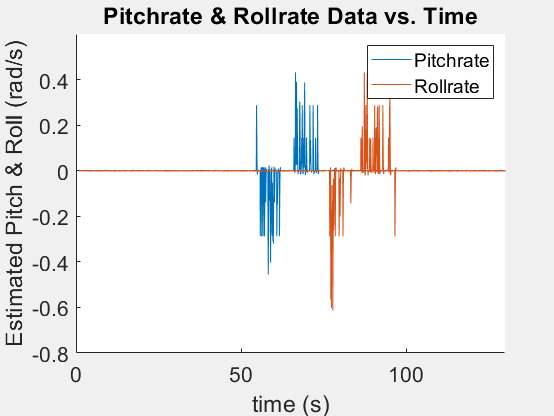
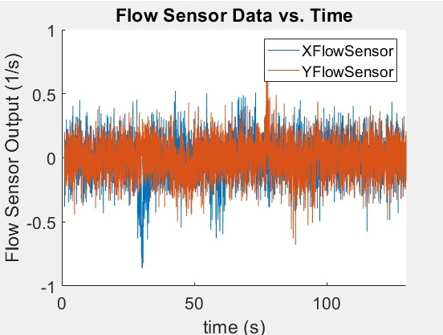
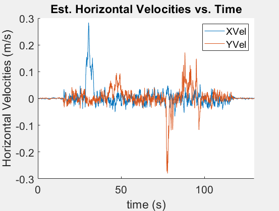
Phase 6
Closed-loop hover: integrating all layers and tuning for stable flight
With working estimators for attitude, height, and horizontal velocity, the final step was closing all the loops simultaneously. The hover controller was not a new system built from scratch, it was an outer loop layered on top of the attitude controller that was already working. This is the natural structure of a flight-control stack: inner loops run fast and handle fast dynamics; outer loops run slower and provide references to the inner loops.
Horizontal position control
To hold horizontal position, the vehicle must damp out any horizontal velocity. The approach was to command a horizontal acceleration proportional to the velocity error, using a time constant τh that governed how aggressively the vehicle corrected:
a_y_cmd = −v_y / τ_h
These horizontal accelerations map directly to desired pitch and roll via small-angle: θ_des = a_x_cmd / g, φ_des = −a_y_cmd / g
These desired angles then fed directly into the attitude controller from Phase 4. The outer hover loop essentially said "if you're drifting right, tilt left", and the inner attitude loop executed that tilt accurately.
Altitude control
Height control used a second-order target with natural frequency ωn and damping ratio ζ, translating height error and vertical velocity into a desired vertical acceleration:
F_total = m · (g + a_z_cmd)
This desired vertical acceleration became the total thrust command, added to the nominal hover thrust needed to counteract gravity. The total thrust then combined with the attitude moment commands inside the mixer to produce final per-motor force values, the same mixer from Phase 4.
Tuning: binary search on time constants and mixer values
The vehicle started with default parameters and lasted about 5 seconds before hitting a wall. A systematic binary search on the key free parameters produced the following final values:
The single most impactful change was the horizontal velocity mixer weight. Raising it to 0.7 dulled the vehicle's reaction to estimated velocity errors, preventing the over-correction spiral where the vehicle would drift slightly, command a sharp tilt to correct, overshoot, then tilt the other way in an amplifying oscillation. That damping change alone extended stable flight time substantially.
The final hover averaged 30 seconds of stable flight, compared to 5 seconds with default parameters. The remaining failure mode was the room size: as the vehicle made large corrective swings, it would occasionally contact a wall before the correction completed. Analysis suggested that larger physical space would allow the same controller to stabilize fully, since the swinging motion was nearly self-correcting before the wall intervened.
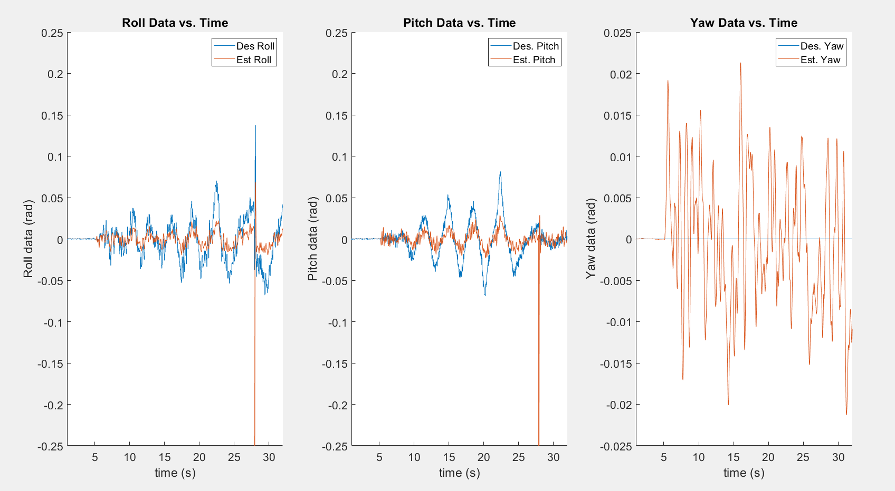
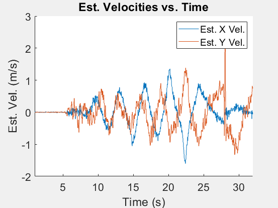
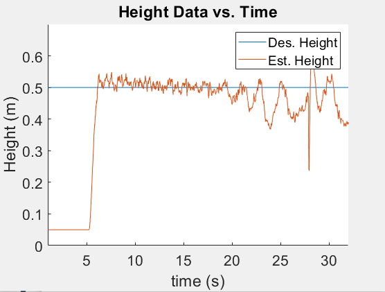
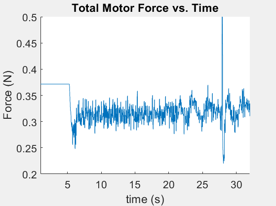
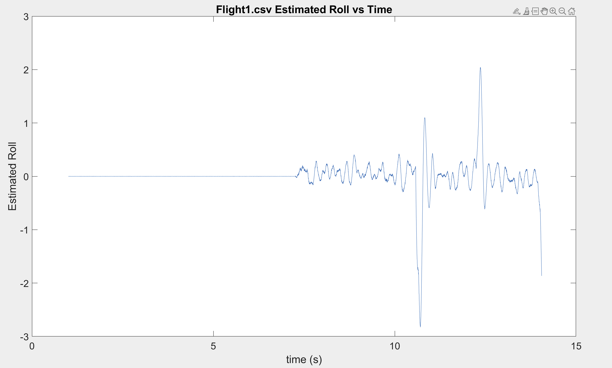
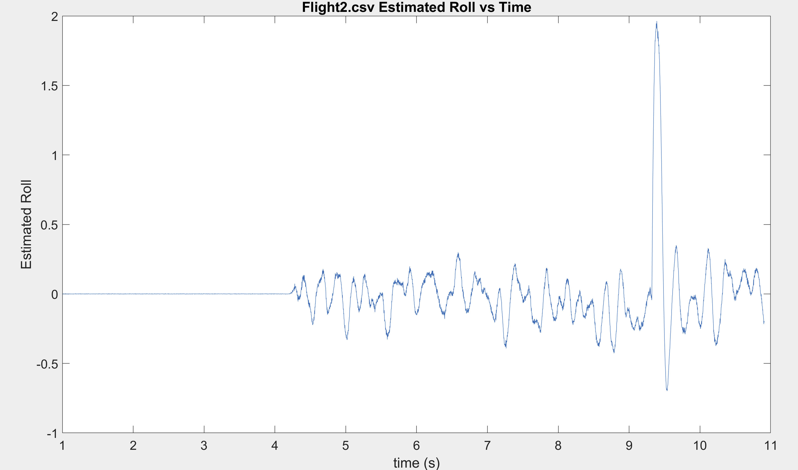